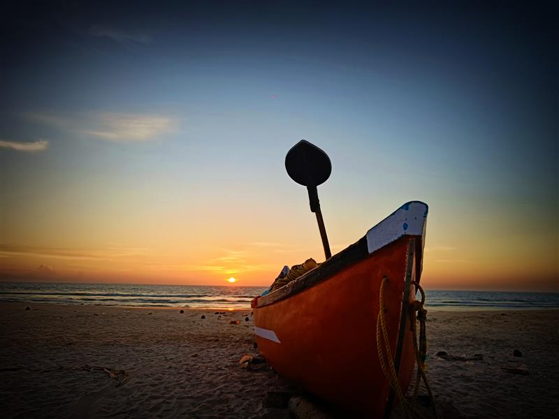
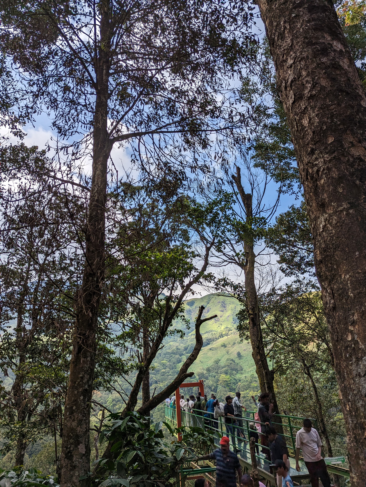
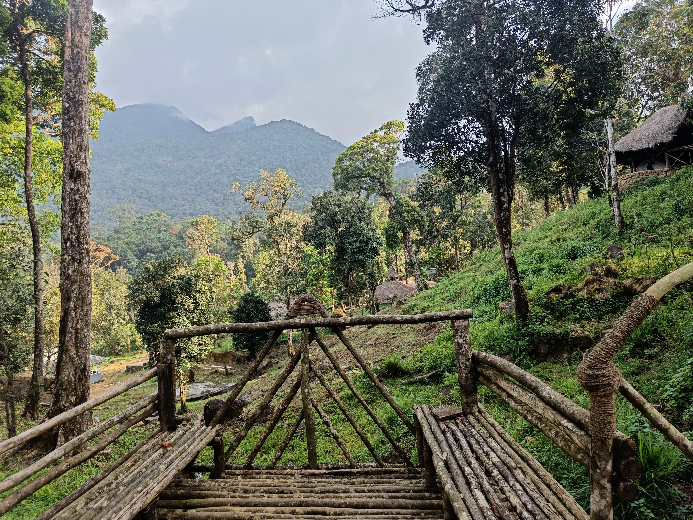

Rolling green hills, misty forests & breathtaking Western Ghats views
🕔 5:00 AM – Departure from Bangalore
🍽️ 8:30 AM – Reach Kudremukh base village, breakfast & briefing
🥾 9:30 AM – Start trek through lush forests & streams
⛰️ 1:00 PM – Reach Kudremukh Peak, lunch & relaxation
⬇️ 2:30 PM – Descend back via scenic trail
🚐 6:00 PM – Reach base village, freshen up
🌃 10:00 PM – Arrive back in Bangalore


